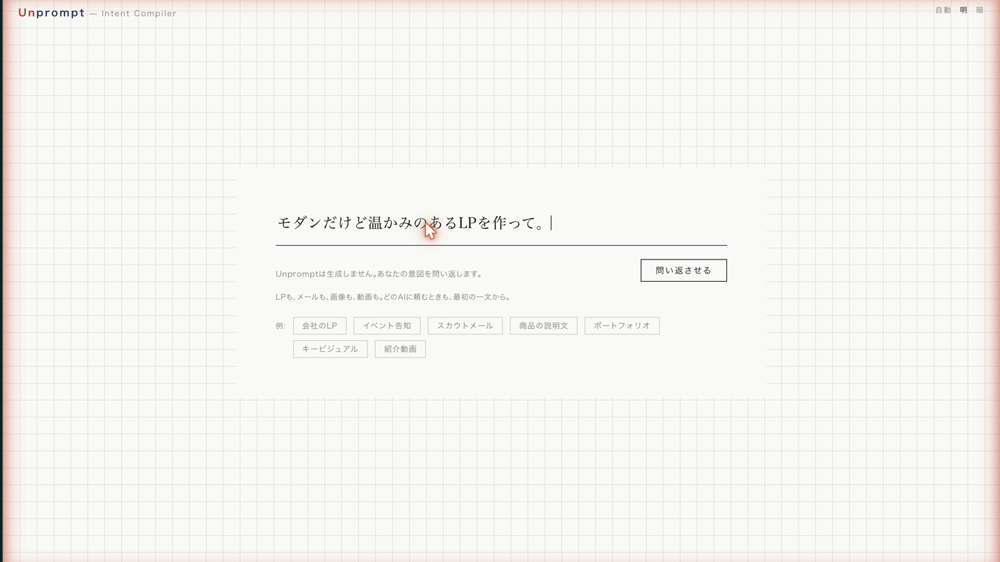
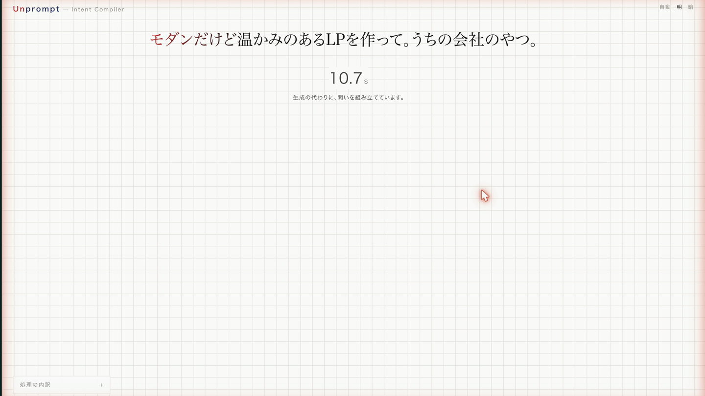
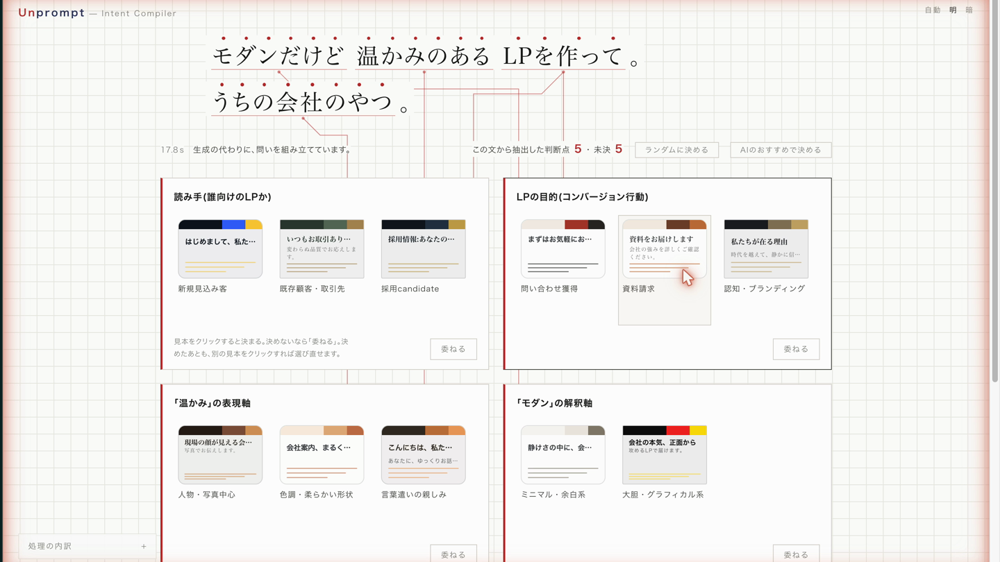
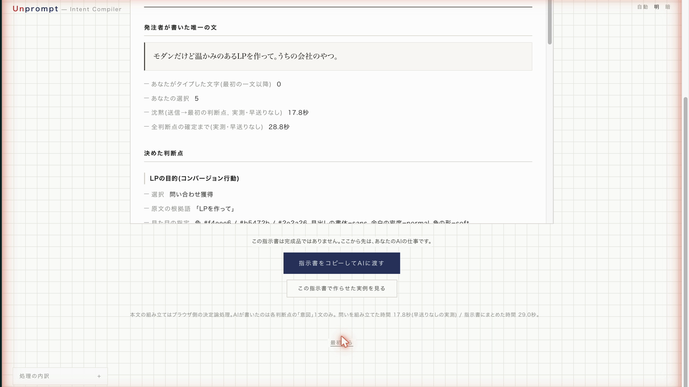

0:00 曖昧な一文をそのままタイプ
生成AIもフォームも「意図は言語化済み」と仮定する。曖昧な依頼の空白は、読み手(人間/AI)が勝手な事前分布で埋め、誰の意図でもない成果物と修正往復が生まれる。




| 計測点(本収録テイク) | 実測 |
|---|---|
| 静寂(送信→最初の判断点) | 17.8 秒(等速主張はアプリ内カウンタ) |
| 全判断点の確定まで | 28.8 秒 |
| 指示書にまとめた時間 | 29.0 秒 |
| 抽出エンジン(キラーテスト11本) | api 8〜33 秒(中央値 約16 秒) |
| 対照レンダ 1枚 | api 4.1 秒 / 壁時計 5.0 秒 |
grill-me 自身が「複数質問の同時提示は混乱(bewildering)」と明記している — 需要の実証であり、限界の自認。
テキストでは混乱する並列が、帰結レンダリングなら3秒で選べる。「温かみ」= 配色か、口調か、余白か — 言葉で聞かれても選べないが、3枚の見本なら選べる。
Midjourney は並列選択UXの実証。本作はそれを「成果物を書かない側」の象限へ移した。
脚注: 「空白象限」は本マップ2軸上の主張であり、全製品空間の網羅は主張しない。grill-me は一次確認済(2026-07-29)。他は公知挙動としての記載。
| 段階 | 決定 | 実測 |
|---|---|---|
| 0 | 初期構成 | api 97〜123s / 8〜10K tok |
| 1 | system置換+effort low | 44.5s / 2.7K tok |
| 2 | スリムスキーマ分離 | 8.8〜15s / 530〜540 tok |
| 3 | --setting-sources project | 壁時計 ≈ api+約1s |